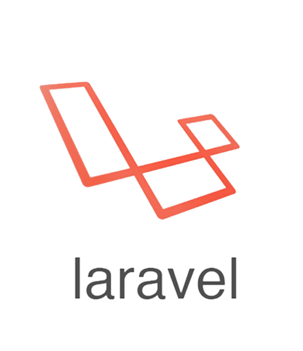
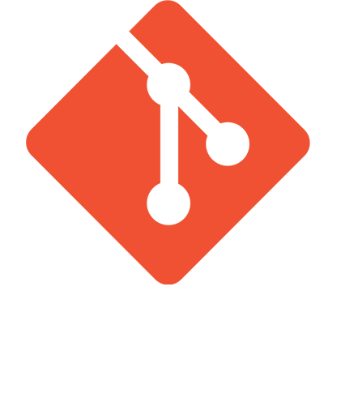
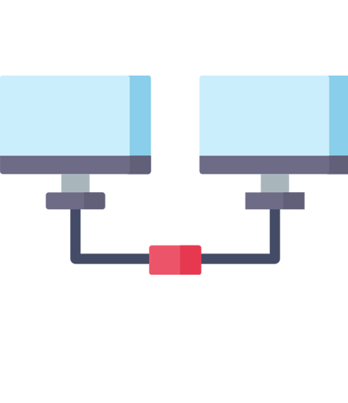
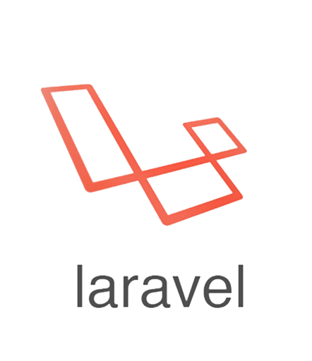
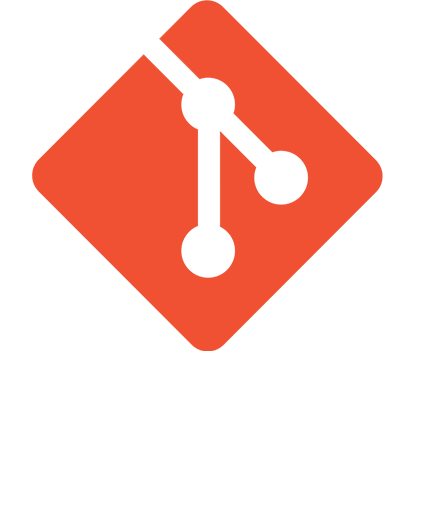
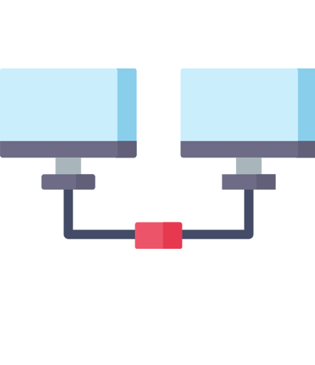

About me

My ambition is to become a network and security engineer.
First-year engineering student at ISEN Lille, I'm 24.
The purpose of this portfolio is to introduce myself and show you the various projects that I have carried out personally, but also during my school career.
Driver's licence holder and vehicle. I am geographically mobile.
First-year engineering student at ISEN Lille, I'm 24.
The purpose of this portfolio is to introduce myself and show you the various projects that I have carried out personally, but also during my school career.
Driver's licence holder and vehicle. I am geographically mobile.


 




